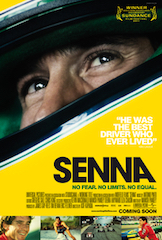

Professionally my focus and experience is in sales and partnerships, but when I'm not working I am probably eating something delicious, hanging out with my wife or escaping to a new destination. I am currently a fullstack student at Le Wagon in Amsterdam.
See for yourself
La Grande BellezzaAn ageing writer has spent many years seducing his way through the lavish nightlife of Rome for decades, but after his 65th birthday, he starts to look past the nightclubs and parties to find a landscape of exquisite beauty. |
|
|  |
SennaAyrton Senna becomes a three-time Formula One racing champion and Brazil's national hero before his untimely death at age 34. |
Chariots of FireIn the class-obsessed and religiously divided United Kingdom of the early 1920s, two determined young runners train for the 1924 Paris Olympics. Eric Liddell (Ian Charleson), a devout Christian born to Scottish missionaries in China, sees running as part of his worship of God's glory and refuses to train or compete on the Sabbath. Harold Abrahams (Ben Cross) overcomes anti-Semitism and class bias, but neglects his beloved sweetheart Sybil (Alice Krige) in his single-minded quest. |